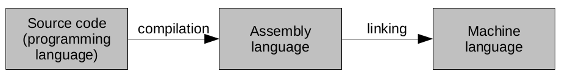
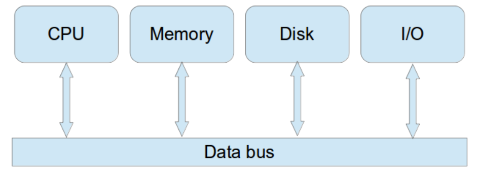
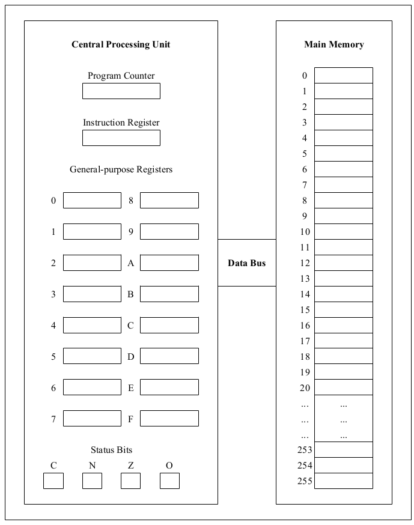
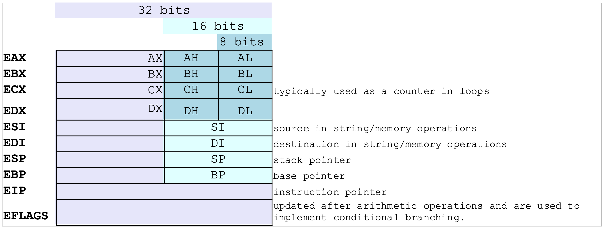
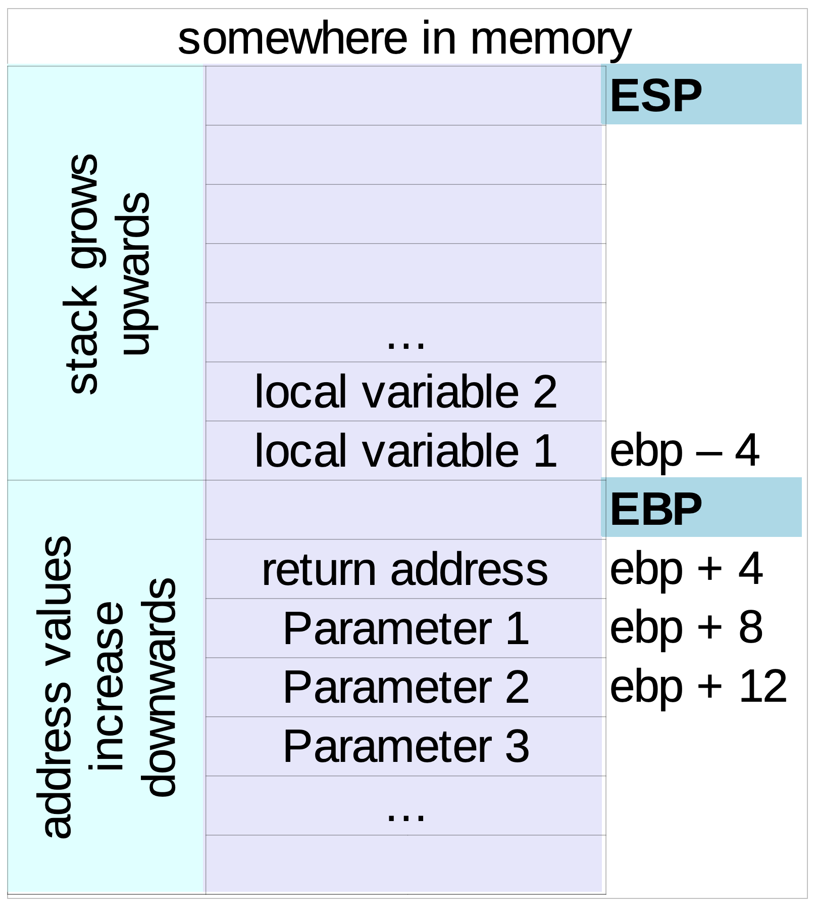
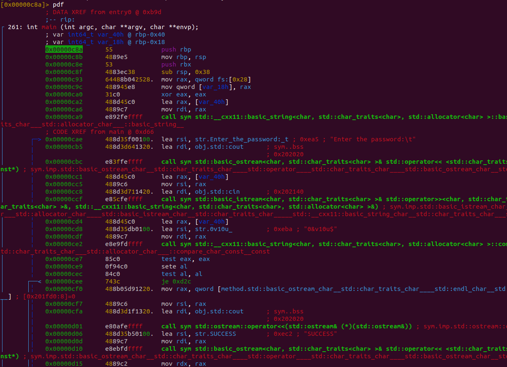
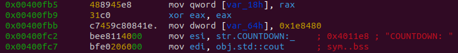
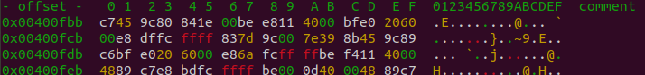
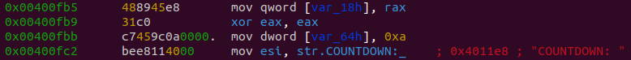

Introduction To Reverse Engineering.
is reverse engineering?
Reverse engineering is a process by which we try to extract knowledge about the inner workings of something without being privy to its creation process. Some of you were curious as children and took apart your toys or gadgets to figure out how they worked. This is reverse engineering in a nutshell.
In our context, reverse engineering usually means figuring out what a piece of software does and how it does it without being privy to the source code. Many times the software is provided in the form of an executable.
Our success in figuring out how a toy car works by breaking it apart is dependent on how familiar we are, or can be with the individual components that make up that car. Similarly, our success in figuring out how a piece of software works is dependent on how familiar we are with the parts that make up an executable piece of software.
The process of getting familiar with the components that might be in a piece of software is a daunting one. It is one that will take a lot of time for one to get comfortable with. Even your instructors have not attained that level yet. However, one does not need a lot of experience with how a toy car works to break it apart and attempt to understand it. Yes someone who knows all the parts in a toy car will quickly figure it out, but anyone can do the same given enough time and a “never say die” attitude. Similarly, we don’t need a lot of experience to reverse engineer our first piece of software. It will look overwhelming at the beginning but hopefully we’ll figure out a little bit of it as we progress through the class, lab and challenge.
Why should we learn reverse engineering?
Software is complicated to understand as is. If not, computer science would not be a course at all. Admittedly some of the smaller programs you wrote earlier in your life might be easy to understand, but larger systems and programs are not easy to understand unless they are really well documented or use a programming language and programming style that you are very familiar with. The process of reverse engineering is even harder because you rarely have access to the source code but rather the executable.
$ g++ hello.cpp -o myexecutable # compile a simple c++ program
$ cat myexecutable # see if you can understand what is has.As you can tell from the commands above, there is very little you can gleam by visually examining the executable of a program.
So. Why go through the process of trying to figure out what a program can or is doing.
Well one reason is competition. If your competitor has a program, it might make sense to reverse engineer it so that you can create your own better version of it. Unfortunately, this process is typically too expensive (time-wise) that it makes more sense to just write your own version from scratch.
A more realistic reason for reverse engineering is software development related. Sometimes your piece of code depends on libraries whose source code is not readily available and so you want to figure out how it works and identify any security concerns so that you can address them in your own software. Sometimes this has nothing to do with the security and you are more interested in identifying how the software works so that you can design your own to work better with it.
Another security related reason is to identify how a piece of software works so that you can build a solution. This pops up in the study of malware. Many times researchers will break open a virus so that they can understand how it works and identify what security flaws it is taking advantage of so that they can update their own software to patch those flaws.
On the sketchier side of things, reverse engineering could be used to identify the security features of a piece of software in order to take advantage of it. Bad actors could then use the identified vulnerabilities to create exploits based on them. Sometimes there are legitimate reasons for this e.g. counter espionage or to override copy protection schemes.
An example of this was ArccOS protection in which Sony intentionally included corrupted sections on their DVDs that their software was looking for as a mark of legitimacy. If their software did not find the corrupted section on the DVD, it assumed that the DVD was a copy and therefore would not play the DVD. This despite the fact that it is not illegal to make a copy of your own DVD for your own use. One could reverse engineer the software and patch it to create a version that doesn’t check for those sectors and would therefore work for any DVD.
What we should know.
CSC/CYEN 130: How different programming languages are compiled and/or interpreted.
Computers only understand 1s and 0s. Humans find it hard to understand 1s and 0s especially if its a large number of them. So there is a gap between what we can write and understand and what the computer can understand and execute and that gap is bridged by the compilation process. More formally, the 1s and 0s are referred to as machine language, and the commands we write that look a little like English are referred to as the programming language. A compiler is a tool that translates a program from the programming language to the machine language.

Unfortunately (or fortunately), this traditional compilation process produces machine language that can only be understood and/or executed by a computer system with the same characteristics and operating system as the system on which the compilation process was done. As a result, many programmers who want to distribute a program will have to compile it on multiple systems in order to create multiple versions of the machine language that different users can download and/or use depending on which system they have themselves. C and C++ are the most known examples of compiled languages.
Another approach is converting the source code on the fly, line by line into machine language. The downside to this approach is that it is comparatively slow and the source code has to be provided for one to use it which can present problems when you want to keep your intellectual property private. Python and Javascript are well known examples of interpreted languages.
The last approach is sort of a hybrid between the two. The program is “partially compiled” into an intermediate form. That intermediate form can be distributed to anyone who wants to execute the program. The intermediate program is then executed on the target system with the use of an interpreter on that system. One doesn’t have to create multiple intermediate forms for different target systems with this approach. Additionally the intermediate form cannot “easily” be translated back to the original program so intellectual property is somewhat safe.
Java is an example of such a language and the intermediate form it takes is a class file which stores bytecodes.
CSC/CYEN 130: Components of a computer and how they communicate.

At a minimum, general purpose computers will consist of a CPU, Main Memory, secondary storage, and some input/output devices. The CPU is referred to as the brain of the computer and is responsible for executing the instructions that make up the program. Main memory (also known as RAM) is where the data and/or instructions currently being dealt with are stored. Secondary storage is used for storing any data or instructions that could be dealt with at any point in the future. Input/Output devices are any devices that allow us as humans to interact with the system e.g. screen, keyboard, etc. All these systems send the data and instructions to themselves via a data bus.
CSC/CYEN 132: The Instruction Cycle.
One way to understand the way a computer is organized and carries out the commands we give to it can be represented in the diagram below. The diagram only shows the CPU and Main memory because those are the two components central to the execution of a command. The diagram does not show the electronic components necessary to execute the program but rather the registers and memory required to do so.

Recall that the CPU has multiple short term storage locations called registers and updates these registers as it progresses through the computation process. In fact, data can only be manipulated when it is located on the CPU and so depending on the instruction, it might be necessary to copy some data/instruction from the main memory across the bus onto the cpu. While most of the registers are general purpose and can be used for almost anything, a few are special. For example, the instruction register holds a copy of the instruction currently being executed. The program counter holds the address of the instruction that will be executed next. Status bits are used to hold information about the most recent operation e.g. whether a carry was generated, or whether the result was negative or zero, or whether the operation resulted in an overflow.
We also discussed the instruction cycle which constituted of 5 steps.
- Fetch: Use the program counter to identify the location of the next instruction to be executed and load that instruction into the instruction register.
- Increment: increase the program counter by one so that it points to the next instruction in the sequence.
- Decode: Break down the instruction into op-code and operands.
- Execute: Carry out the operation by routing the data and or instructions to the appropriate hardware. The results are then stored in the appropriate destinations e.g. general purpose registers, special purpose registers, and main memory.
- Repeat: Start the cycle over again.
Admittedly the information that we have covered here is a stripped down version but it did cover a lot of the actual content (at least enough for you to understand what is going on at a college freshman level).
What we may know.
Understanding the way a program works based off of assembly or some other intermediate form of the program is a difficult task. A lot of the things that are important for us to understand how a program works in a programming language e.g. spacing, variable names, comments, etc. are not maintained when the code is converted to intermediate or even assembly language. Its almost like trying to figure out what a jigsaw puzzle shows without seeing the picture on the box.
In order to get the most out of this we are going to quickly go over the basics of assembly language. That way when we see a lot of it at once, we aren’t completely overwhelmed.
Note that assembly language depends on the target system that the software was compiled for. For example there are different assembly language codes for intel 32bit (IA32) vs intel 64 bit vs ARM. For simplicity, we shall stick to a discussion of IA32. The concepts discussed here can easily be applied to other architectures and languages after a short study of their language rules and how they compare to IA32.
Assembly language Basics
Register Set and Data Types
We’ll start with the register set and data types. Note that since we are looking at a specific architecture, this might look slightly different from the version you saw in CSC/CYEN 132.
The x86 architecture has eight general purpose registers that are each 32 bits long as shown in the diagram below. A few of them can be further divided into 8 and 16 bit registers. The names and sometimes their purposes are mostly historical but it is still important to understand them.

Data of different sizes can be stored in the general purpose registers in different forms. Note that the general purpose registers are EAX, EBX, ECX, EDX, ESI and EDI.
- Bytes or 8 bits can be stored in AL, BL, CL, and DL
- Words or groups of 16 bits can be stored in AX, BX, CX, and DX
- Double words or groups of 32 bits can be stored in EAX, EBX, ECX, and EDX.
- Quad words or groups of 64 bits can be stored across pairs of registers typically EDX:EAX
Data Movement.
One of the most common operations in assembly is moving data. This typically falls in one of 5 types.
1. Immediate to register e.g. storing a numerical value that is part of an instruction in a register.
2. Register to register
3. Immediate to memory e.g. storing a numerical value that is part of an instruction in a location in memory. The specific address would be stored as the value in a register in the cpu.
4. Register to memory and vice versa. Similar to above, if memory is going to be accessed, its location needs to be stored in one of the registers in the cpu.
5. Memory to memory. This type of data movement is not common at all. In fact, most architectures do not even support it at all. If any data needs to be moved from a memory location to another location, it would have to be moved to one of the registers temporarily.
The form of the command is
mov destination, source ; this is what a comment looks like.
mov ecx, 0xF005F ; store the value 0xF005F in the register ECX.
mov esi, ecx ; ESI = ECX
mov ecx, [eax] ; EAX contains an address. Go to that address and ; store the value found there in the register ECX.
mov [ebx], ecx ; store the value found in ECX in the location ; referenced by EBX.
mov eax, [esi+0x34] ; go to the location 0x34 after the address in ;ESI. retrieve that value and store it in EAX.
mov dword ptr [eax], 1 ; store the 32 bit representation of ; 1 in the address referenced by EAX.Many times the size of the data item can be inferred from the instruction. For example mov eax, ebx could only mean move the 32 bits in ebx to eax since the source register (ebx) is a 32 bit register.
However there are cases where the interpretation can be ambiguous and in those cases requires a size directive immediately after the mov command. Examples include byte ptr, word ptr, and dword ptr which specify that the data in question should be 8, 16 or 32 bits wide respectively.
Another common command related to data movement is the lea command. Load Effective Address evaluates the address in its second argument and stores the result in the register specified by its first argument. Note that it stores an address and not the value and is typically used for getting a pointer to an address in memory.
lea register addresslocation
lea eax [ebx+4*esi] ; EAX will store the address evaluated from the ; expression in the square brackets.Arithmetic Operations.
Basic mathematical and logical operators are supported. These include addition, multiplication, division, subtraction, and, or, not, xor, as well as left and right shift. Most of these should be straightforward in their interpretation.
add esp, 0x13 ; ESP = ESP + 0x13
sub ecx, eax ; ECX = ECX – EAX
inc ebx ; EBX = EBX + 1
dec edi ; EDI = EDI – 1
or eax, 0xFFFD ; EAX = EAX | 0xFFFD
and ebx, 6 ; EBX = EBX & 6
xor eax, eax ; EAX = EAX ^ EAX
not edi ; EDI = ~EDI
shl cl, 3 ; CL = CL << 3
shr ecx, 2 ; ECX = ECX >> 2The left and right shift operations appear more frequently than one would think especially given you might have never used them since you saw them in CSC/CYEN 130. Left and right shift are computationally cheaper alternatives to multiplying and dividing by powers of two. For example, 100/2 is the same as 100>>1 and 546/16 is the same as 546>>4 while 234*8 is the same as 234<<3.
Multiplication and division are slightly different from the basic forms discussed above.
MUL only works on unsigned numbers and takes one argument i.e. the location of the multiplier. The multiplicand is always assumed to be in either AL, AX or EAX and the product will always be stored in AX, DX:AX, or EDX:EAX. Note that when multiplying two numbers, the product has the potential to require double the number of bits for storage hence the need for much larger register space for the product.
mul ebx ; EDX:EAX = EAX * EBX
mul bl ; AX = AL * BL
mul dx ; DX:AX = AX * DXSee if you can figure out what the snippet below is doing.
mov eax, 3
mov ecx, 0x23232323
mul ecx
mov eax, 4
mov ecx, 0x78787878
mul ecxNote that in the examples above, one of the products cannot be stored using just 32 bits. This is a demonstration of the reason why multiplication of two registers will require the result to be stored in a larger register (which in the commands above is EDX:EAX)
IMUL works on signed numbers and could take either 1, 2 or 3 arguments.
imul ebx ; EDX:EAX = EAX * EBX i.e. same as mul command
imul esi, 0x13 ; ESI = ESI * 0x13
imul ecx, esi ; ECX = ECX * ESIDIV and IDIV look very similar to MUL. They only take a single argument and are inherently tied to the EAX register. The argument stores the divisor. Because the quotient could potentially be much smaller in size than the divisor, the result is stored in a smaller register. The result will constitute of both the quotient and remainder pair which are stored in AL/AH or AX/DX or EAX/EDX.
div ebx ; EDX:EAX / EBX. Quotient in EAX, remainder in EDX
div cl ; AX / CL. Quotient in AL, remainder in AH.Stack Operations.
A stack is used to invoke a function and as such, stack operations will be pretty common in assembly language. The stack is NOT located in the registers but rather in contiguous locations in memory. The beginning and end of the stack is typically stored in ESP and EBP respectively. Both these registers can be manipulated to adjust the beginning and end point of the stack during code execution. This allows for functions to have easily accessible local variables that can then be discarded by moving the beginning and end points of the stack again.
Keeping track of the interplay between the registers and the ever changing stack can be a little tricky to grasp at the beginning but don’t forget that your brain is way more complicated than a computer and in the end, all it is doing is very simple data manipulations.

The stack uses two commands both of which implicitly change ESP. Push reduces ESP (typically by 4 bytes or 32 bits) and then stores the value in the new location referenced by ESP. Note that reducing the value of ESP has the effect of growing the stack by adding a new memory location to the stack. Pop stores the data referenced by ESP before increasing it. Increasing ESP has the effect of shrinking the stack.
push value ; reduce ESP and store value in location referenced ; by new ESP value.
pop location ; store value referenced by ESP in location, then
; increase ESP valueSee if you can follow what happens in memory and in the registers during the following sequence of code.
; assume ESP = 0xb20000
mov eax, 0xF00D
mov ebx, 0xFACE
mov ecx, 0xF001
mov edx, 0xD001
push eax ; what do the stack and registers look like?
push ebx
pop esi
pop ediAs far as functions are concerned, a lot of the abstraction that makes them very appealing and easy to use in high-level programming languages is lost by the time it makes it to the assembly language.
There are two extra commands we need to understand to know how functions look like in assembly.
call address/varNameThe call command does two tasks.
1. It pushes the address immediately after it onto the stack. Note that this will involve reducing ESP and then putting that address value on top of the stack.
2. It then changes EIP to the call destination as defined by the address/varName in the command.
This is the first command we have discussed that has the potential to change the sequential nature of the commands in assembly. Pushing the address onto the stack allows the system to know which command to proceed with when the function is completed. Changing the EIP allows the system to know where the function assembly code is located so that it can begin executing it.
retThe ret command is typically found in the assembly code corresponding to the function and marks the end of that function. It does this by popping the address on top of the stack into EIP and transferring control to it. Recall that we stored the address we would want to go back to on the stack with the call command. The ret command puts that address into EIP so that the system will know where to proceed.
As a practice run of the stack operations, see if you can figure out what the following snippets of code are doing and how they are doing it. You will need to keep track of both the registers and a block of memory denoting the stack.
; assume a function (that we’ll refer to as mystery) is defined as
; shown below. We’ll refer to this section of code as Section A.
push ebp
mov ebp, esp
…
movsx eax, word ptr [ebp + 8]
movsx ecx, word ptr [ebp + 0xC]
sub eax, ecx
…
mov esp, ebp
pop ebp
retFurther along in the code, the function is invoked using the following code
; We’ll refer to this section of code as Section B.
; assume eax has the value 5, and ecx has the value 8
push eax
…
push ecx
call mystery ; mystery could be a memory address, or assembly ; function name
add esp, 8Don’t forget that adding 4 to an address has the effect of moving you to the next memory location. Similarly adding 8 will move you two blocks over, and C will move you three blocks over.
Control Flow.
Control flow is how assembly would deal with selection and repetition i.e. if/else, switch/case and while/for constructs that you would find in higher level programming languages. The commands in this section allow for the execution to be non-sequential i.e. allows for the system to skip to a line of code later in the program as a result of a test of some sort. All the commands will depend on the EFLAGS register which contains 32 flags that are updated with each mathematical operation that is executed. Common EFLAGS that are used include:
- Zero Flag (ZF). Set to 1 if the result of the previous operation is zero.
- Sign Flag (SF). Set to match the most significant bit of the result of the previous calculation.
- Carry Flag (CF). Set to 1 if the previous calculation required a carry.
- Overflow Flag (OF). Set to 1 if the previous calculation resulted in an overflow.
The commands themselves include CMP, TEST, JMP, and Jcc where CC is any of multiple options for conditional code.
cmp eax, ebx ; subtract EBX from EAX without changing EAX and ; update the EFLAGS accordingly.
test eax, ebx ; perform an AND operation between EAX and EBX ; without changing either, but update the EFLAGS ; accordingly.
jmp <label> ; move execution to the memory location indicated by ; the label.
j[cc] <label> ; move execution to that location if the conditional ; code [cc] is satisfied.Common conditional codes include:
1. JB/JNAE: Jump if Below/Neither Above nor Equal
2. JNB/JAE: Jump if Not Below/Above or Equal
3. JE/JZ: Jump if Equal/Zero
4. JNE/JNZ: Jump if Not Equal/Not Zero
5. JL/JNGE: Jump if Less than/Not Greater than or Equal
6. JGE/JNL: Jump if Greater or Equal/Not Less than
7. JG/JNLE: Jump if Greater/Not Less than or Equal.
You will notice that there is no specific command to repeat a line of code. However, any repetition constructs can be rewritten using just if statements and goto statements and that is what is done during the compilation process.
With this brief introduction/recap of assembly language, I believe it’s time that we dived into the deep end and looked at some programs to see if we can identify what is going on and perhaps even adjust it for our own purposes.
Java Reflection.
We shall start getting our hands dirty with java. Note that this section will NOT involve assembly language. Recall that this is one of the languages that is partially compiled into byte code. The byte code can be distributed to any user who wants to execute it without needing to make any accommodations for different target systems. Additionally, one of the features of byte code is it provides some kind of security such that users cannot easily figure out what the code is.
$ cat Test.class
$ cat TestTest.class
$ java TestTestJava allows for programs to examine and potentially manipulate themselves during their own execution. For example, it is possible for a class to get and display the names of its members. It is also possible for another program written in java to modify the behaviour of classes, methods and interfaces at runtime. This ability to “reflect” doesn’t come with many other languages.
The TestTest program seems self explanatory. It utilizes the Test class which we know little about other than how to use it properly. But let’s write another program to “reflect” upon it to see if we can find out anything about it we shouldn’t know.
cf ReflectionTest0[1,4].javaIf going over Test.class did not give you a good understanding of the power that can be wielded by a person with a good grasp of the Reflection library, let’s go over Countdown.class.
cf ReflectionCount0[1-4].java
# how can I get it to give me the password earlier?
# There are two ways to do this. Which one is better?Hopefully you can see the implications of this power. There is a story that some programmers did something similar to a game of Runescape and gave themselves a lot of game money which they then sold to other players of the game for real money…until they were discovered and sued.
The beauty of this style of reverse engineering is that it doesn’t even really require a lot of extra knowledge to start using it. As long as you understand the terminology behind object oriented programming in java, you can do it. The downside is that it only works for java.
Radare 2
In order to reverse engineer more than java, we are going to have to get back to our assembly language. The tool in question that we shall use is called radare 2. There is no way to grasp the full capabilities of radare in the short time we are devoting to it in this class. In fact, it is going to look overwhelming at the beginning but hopefully we know just enough to survive today. And then with more time and practice, we shall get comfortable enough with it to do some real analysis.
Radare2 is a disassembler and debugger with a lot of functionality. Its open source and a competitor of more well known tools like IDAPro and Ghidra. The most updated version of radare2 is maintained on github and so its installation process is a little bit unconventional.
$ sudo apt-get update # update your list of repositories
$ sudo apt-get upgrade # if you have time/internet, upgrade any
# outdated software on your system.
$ sudo apt-get install git build-essential # install git and
# software essential to writing programs.
# navigate to a directory you are comfortable with downloading and
# installing to. Make sure it is a directory without spaces in its
# name coz apparently that may cause installation issues. A
# suggestion is Downloads, or a specific folder on your Desktop.
$ git clone https://github.com/radare/radare2
$ cd radare2 # navigate to the radare2 directory that has just
# been created.
$ sys/install.sh # execute its install script.Any time that you want to update it, navigate to wherever the radare2 folder was stored and re-execute its installation script.
$ ./sys/install.sh # to update it anytimeAlternatively, if you want to delete/uninstall it, make sure you are in the radare2 folder when you execute the following commands.
$ make uninstall
$ make purgeGetting Started.
A quick piece of advice before we start. It is highly encouraged that you run this process on a virtual machine whenever you are analyzing any piece of software. However, you can be sure that the software I am giving you is safe and therefore you can run it on your host system (although that is something a more nefarious actor would say too). I would also suggest making a copy of the executable so that you have the original to revert to should you make any changes to it (intentionally or inadvertently).
$ r2 -h # to find some help in starting.
$ r2 -d filename # to open the file in debug mode
$ r2 -w filename # to open the file in write modeOne should only open the file in write mode when they have a good understanding of the program and intend to make actual changes to it. One would typically use the debug mode to get that understanding. Let’s start by analyzing a very simple program: 1.exe
Once open, radare2 will open a shell. It prints out a fortune every time you do so. The shell offers us the option to run commands and by default is opened at the entry-point address of the program. The value on the left of the prompt is the location in memory that you are currently at in your debug process.
> ? # find out the command options available
> i? # find out the command options available that start with I
> aa?
> iM # find out where the main program is
> iI # print out some information about the binary.
> ie # list all entry points to the program.
> aaa
> q # IF YOU EVER WANT TO QUIT.Its typically a good thing to start with analyzing the program – aaa. Note that this could have been done at startup with the r2 -A command. Analyze all allows radare to go through the program and match names to interesting offsets/memory locations e.g. strings, functions, and symbols. This will make navigating through the program easier going forward. These names are referred to as flags. Flags of a similar type are grouped into what is referred to as flag spaces and you can investigate any of them.
> fs # to list all flag spaces (and their frequency)
> fs <flagspace> # to narrow down to a specific flag space
> f # and print out all the flags in that flagspace
> fs * # to go back to all the flags.
# Sometimes that is all it takes to hack a program.For example fs registers; f should reveal that radare has identified some familiar names.
You might have noticed that as a result of its analysis, r2 flagged some memory locations as strings (fs strings; f). r2 marked all these flags with the str precursor. In order to look at these strings, we are going to go back to our info commands.
> iz # find the strings in data portion of the program.
> izz # find the strings in the entire binary.
# Sometimes that is all it takes to hack a program.We can see some interesting features of a few strings. Most of the strings make sense. I wonder what we can try out with the one that doesn’t make sense.
We could analyze the references to these strings i.e. see what commands or memory locations actually use those string flags.
> axt str. # hitting tab space should reveal all your options.
> axt str.<specific string flag> # shows you how/when that flag is # used.
> axt @@ str.* # @@ is “for each”, str.* is a way of accessing # all the string flags in this command.We are beginning to see the addresses and commands in assembly where these strings are being used. The results of some of these commands should look familiar to us since we discussed them at the beginning of this lecture.
All this time, we have been at the entry point of the program. This is shown by the fact that the value to the left of the cursor, which denotes where in memory you are, has not changed since we began our analysis. We can move to other parts in the code for closer inspection using the seek command.
> axt str. # hitting tab space should reveal all your options.
> axt str.<specific string flag> # shows you how/when that flag is # used.
> axt @@ str.* # @@ is “for each”, str.* is a way of accessing # all the string flags in this command.Time to dive in and look at some assembly. To do that, we’ll have to disassemble the code and print it out.
> pdf # take your time looking at the output and see if you can # identify a few familiar things.What you should see is some visual screen representation of where you are in memory i.e. main function. It shows the memory location, opcodes and operands, as well as the assembly language representation of the commands. It might also have some arrows on the left showing where successful jump commands will go.

It might seem like a lot but it is made up of small simple commands, the vast majority of which we spent a lot of time discussing earlier in this lecture. So with enough time, the vast majority of this should make some sense.
Looking over the code, one begins to get an idea of the general layout of the program and perhaps even potential pseudo-code for it.
Radare is equipped with a visual mode that might help one get a better grasp of the big picture of the code.
> v # load visual mode. Your arrow keys will allow you to move up,
# down and sideways in your code.
# to use normal r2 commands in visual mode, you’ll have to use it
# like vim i.e. “:” followed by the command.
q # to quit out of visual mode
p # to switch panes in visual mode between disassembly, registers,
# and the stack (all of which we have seen before)
; <comment> <Enter> # if you want to add your own comments to the
# code at a specific point
;- # to remove the comment.Another cool feature for those of us who prefer visual cues is VV. This activate the visual graph view. You might need to zoom out to see the relationships between different blocks of code.
>VV # activate the graph view. Direction arrows to slide.As we mentioned before, take your time to look over the code and see if you can figure out what is going on. I don’t expect you to know what every single command is doing but rather what the big picture is. Take advantage of the provided radare cheat sheet and see if you can mess around and move around in the code. Its okay if you get stuck somewhere as it is a simple program and you can easily end the process and start all over again.
When you feel like you are not as freaked out about everything, it is time to make a few adjustments to the file.
Changing things up - temporarily.
My analysis of 1.exe shows that there is a test command that determines whether to proceed to success or to jump to failure. My first thought would be to trick this test into failing so that we can proceed to success.
This particular jump is JE which we know is related to JZ and therefore the z bit of the eflags register.
$ r2 -d 1.exe
> aaa # to analyze the whole program
> s main
> v # and then scroll to the appropriate line of code.
F2 # to set a break point
; some comment # perhaps even add a comment
q # to quit out of visual mode
> dc # to run the program up till the break point
> v # to go back to visual mode to inspect the state
q # to quit out of visual mode
> dr zf # to find the value of the z bit
> dr zf=0 # to change it to zero
> dc # to proceed with execution Take your time with the sequence above. Remember that ? will allow you to look up commands and what they potentially do.
Another approach would be to change the command that says jump if equal to the opposite…
$ r2 -d 1.exe
> aaa # to analyze the whole program
> s main
> v # and then scroll to the appropriate line of code.
q # quit out of visual mode
> wao recj # to reverse the condition.
> dc # to run (or continue running) the program
> ood # to reload the program. Might not work if your
# path has a space in it.Or change it to nothing (i.e. don’t do anything).
$ r2 -d 1.exe
> aaa # to analyze the whole program
> s main
> v # and then scroll to the appropriate line of code.
q # quit out of visual mode
> wao nop # to change the command to do nothing
> dc # to run (or continue running) the programNote that all these changes are only maintained for that session of radare and that if we reloaded the code, all our changes including break points, comments, and new lines of code would be lost.
Changing things up - permanently.
Before we go with permanent change i.e. patching the code, its a good habit to save a copy of the file somewhere so that you have the original in case you need to restart. Another option would be to recompile the source code to get a new version of the executable but this of course depends on whether you have access to the source code. Keep track of flags and identifiers that you used to make your changes in the debug mode because you’ll need to know where exactly to move and what to change while in write mode.
$ r2 -w 1.exe # opening the code in write mode.
> aaa # to analyze the whole program
> s main
> v # and then scroll to the appropriate line of code.
q # quit out of visual mode
DO WHATEVER YOU DECIDED TO DO BASED ON YOUR TRIALS
> q # to quit the programOnce you get out of the write mode, your executable should hopefully do what you wanted it to do.
$ ./1.exe # should run the way you wanted it to now.Let’s see if we can figure out how to patch this next program to work the way we would want it to.
Cf 2.exe # figure out how to change it. You have access to
# password.cc if you want to actually see the source code.Hopefully that didn’t take you too long. The password was not in plain text in the code because there were functions to obfuscate it. That shouldn’t stop us from being able to change the code to give us success though and there are multiple ways of doing that.
For our last program of the day, we will tackle a slightly different problem albeit similar to a problem we’ve faced before.
Cf 3.exe # analyze this code and see if you can figure out a way to # make it work for us. Its no longer just a process of
# changing up some conditional code.A few things to remember when adjusting this code. It is little endian which means that the bytes that are used to store a number will be ordered from the least significant byte to the most significant byte (which is opposite to how we would read a number).
Approaches:
1. Change the jump condition. (This should be straight forward)
2. Change the number it starts at.We shall discuss the second approach.
$ r2 -d 3.exe # we’ll start in debug mode and then change to write
# mode later
> iI # some initial investigation reveals little endian
> aaa # analyze the whole program
> afl # we can see there is a main function
> s main
> v # to view the main functionAfter spending some looking over the code in main, we recognize the command that sets a register to the value 0x1e8480 (which evaluates to 2,000,000). One might also notice that the opcode/operands, which are shown by the hex in the middle of the screen actually has the value 80841e.

Recall that the view screen shows (in order)
1. The memory location of the command,
2. The hex value currently stored there,
3. The disassembled command, and
4. potentially some comments based on its analysis.
The values before that (i.e. c7459c) are the code for first half of that command.
To change the starting value of our program, we are going to have to change the 80841e value and to do that, we are going to look at the hexadecimal representation of the entire code.
# scroll to make sure that the command you are going to change is at # the top of the screen.
> q # to get out of the view mode. In the example above, your
# prompt should now be at address 0x00400fbb
> V # Notice this is upper case V. You can press p/P to cycle
# through the view options here. Some will look familiar. This view allows for the hex to be seen more clearly and potentially even edited. Note that we can see the c7459c80841e that we want to change.
i # to go into Insert mode. A cursor should appear in the # hex value. Move it sideways till we get to the hex value # we want to change. We want to change the 80841e to
0a0000 # which is the little endian way of writing 10 which is
# 00000a
q # to quit out of this editing mode. You can now hit
> v # to see the code with your edit. 
We can now run our program to see if this adjustment accomplished what we wanted it to do.
> q # to quit visual mode
> dc # to continue execution.Once you have confirmed that it does what you want it to do, we can repeat the process with radare in write mode this time.
#| highlight-style: tango
$ r2 -w 3.exe # open in write mode
> aaa # analyze
> s main # go to the main function
> v # view the code and scroll to the appropriate # line
q # to quit the view mode.
> V # upper case v to view the hex.
i # to enter insert mode.(cursor should appear)
Scroll sideways # till cursor is at 80841e, and then type in # your new values
q # to quit hex mode.
> v # to view disassembled code and confirm that
# your changes are what you want.
q # to quit visual mode
> q # to quit radare
$ ./3.exe # to run your patched version of 3.exe.
GREAT SUCCESS!!
Radare 2 GUI alternatives
This might have seemed like a lot and that is completely understandable. We emphasize radare2 even though it depends on command line because the alternatives I will mention here are built on top of it and therefore understanding radare2 and being able to use it is an obvious help.
Additionally radare2 has been around for ages and these graphical alternatives are only new.
I personally haven’t tested them out but they come highly recommended by a former student so I’d suggest taking a look at them in case they make the process of reverse engineering easier for you to tackle.
Cutter
https://cutter.re/
Iaito
https://github.com/radareorg/iaito
References:
1. Practical Reverse Engineering. Bruce Dang, Alexandre Gazet and Elias Bachaalany.
2. X86 assembly guide. University of Virginia.
3. Reflection in Java. GeeksforGeeks.
4. Using Java Reflection. Oracle.
5. A journey into Radare 2. Megabeets.